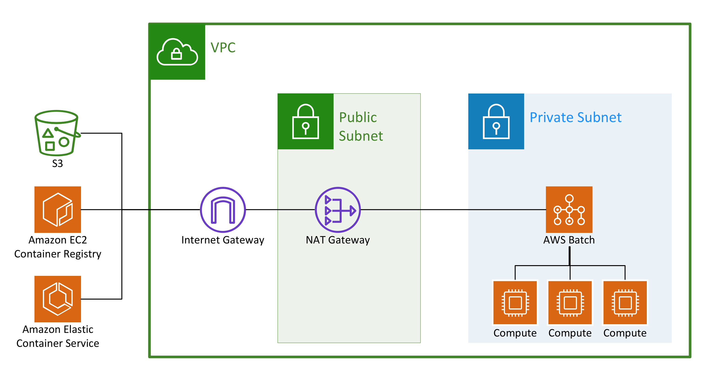
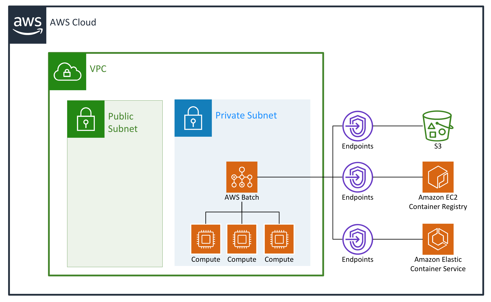
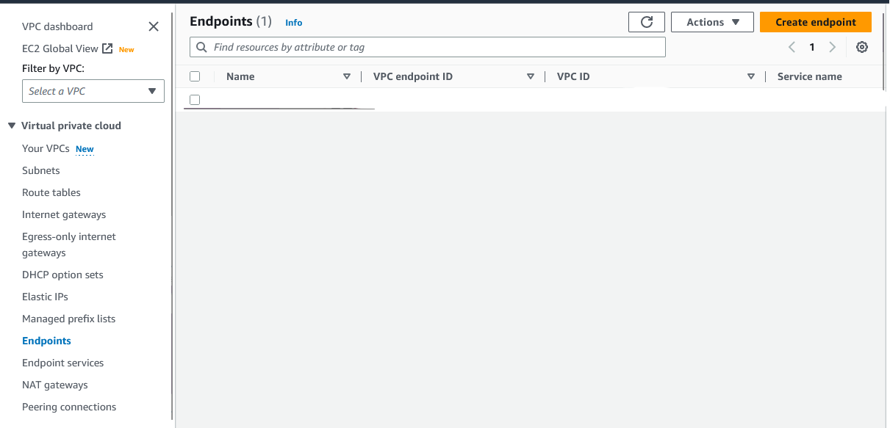
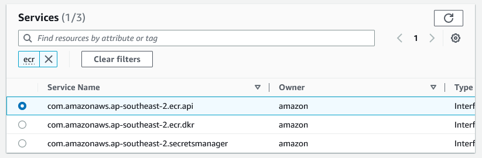

If you are using AWS Batch and don’t have endpoints set up for your VPC, you need to do it right now❗ Í’m sure AWS have their reasons, but for any bioinformatic VPC, these should be set up by default.
Without endpoints, AWS batch jobs in your private VPC requiring access to S3 storage (yes, even your own S3 buckets) or ECR for your docker containers will actually have to go via your NAT gateway and the internet. Not only does this reduce security, but AWS charges exuberant NAT gateway processing fees per GB of data that passes through 💸 With thousands of jobs and large genomic 🧬 datasets and docker images, you will find these fees (listed as EC2 other) will cost you more than the actual EC2 instances.

Additional important benefits are reduced intermittent errors and faster run times. Previously with all communication running through your NAT gateway it would easily become overwhelmed and spin out errors if numerous jobs were transferring large volumes of data (which is the norm in bioinformatics). In turn, this processing would slow your job run times.
Endpoints provide a way for your network traffic to remain ‘local’ within amazon’s networks and avoid any NAT gateway fees, and their setup is easy!

For communication with S3 you can use a AWS gateway endpoint:
Under the AWS services menu, go to the VPC console, select Endpoints and click Create endpoint.

Enter a relevant name and leave AWS services selected as default.
In the Services search field, enter ‘S3’ and press ‘enter’.
Select the service name com.amazonaws.[REGIOIN].s3 that has ‘Gateway’ as the ‘Type’ field.

Choose your VPC.
Under Route tables, choose the ID that matches your Private subnet (ℹ️ tip: scroll across)
Leave the Policy as full access unless your want to make custom restrictions.
Click Create endpoint
Any S3 requests from your private VPC batch jobs will now be processed through the gateway endpoint.
Although your ECR containers are stored in the S3 system, you need to set up ECR and ECS endpoints for the orchestration communication required to setup these containers in your batch jobs.
Setting up an endpoint for ECR & ECS traffic requires a few more steps:
Again under your VPC console, select endpoints and click Create endpoint. Following similar steps as above.
Search in the Services search bar for ‘ECR’ and select com.amazonaws.[REGION].ecr.api

The type is now ‘Interface’.
Choose your VPC.
Select your private subnet.
Select either your default security group or one that has your required restrictions.
Leave the Policy as full access unless your want to make custom restrictions.
Click Create endpoint
Now repeat this process three more times for
com.amazonaws.[REGION].ecr.dkr
com.amazonaws.[REGION].ecs-agent
com.amazonaws.[REGION].ecs-telemetry
You are now all setup 🎉 If all is setup correctly you should now notice a big drop ↘️ in your fees, less ↘️ errors and faster 🏎️ job run times.
This should be the default… 🤷